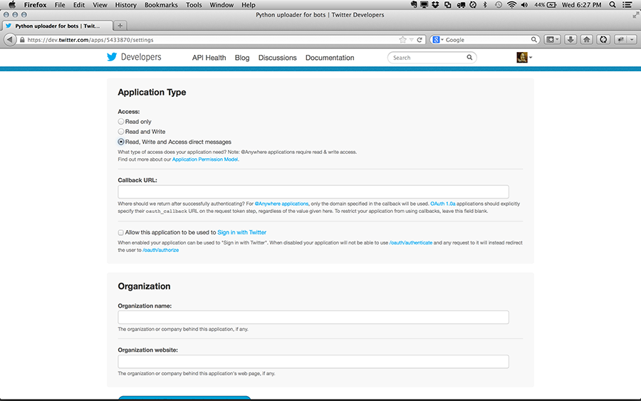

Creating Twitter bots, automated text-generators that spew spam, poetry, and other things, can be a bit of a confusing process. This tutorial will hopefully get you through the tough bits and make bot-building possible!
For this tutorial I will be using Python, a language whose simplicity and natural syntax is great for working with text. However, this tutorial should be easily portable to your language of choice. I also assume you know at least enough programming to write your algorithmic text; if you need some help, I would suggest one of the myriad resources including Learn X in Y Minutes (or building a bot that just says the word "Duuuude!" over and over...).
Creating Twitter bots, automated text-generators that spew spam, poetry, and other things, can be a bit of a confusing process. This tutorial will hopefully get you through the tough bits and make bot-building possible!
For this tutorial I will be using Python, a language whose simplicity and natural syntax is great for working with text. However, this tutorial should be easily portable to your language of choice. I also assume you know at least enough programming to write your algorithmic text; if you need some help, I would suggest one of the myriad resources including Learn X in Y Minutes (or building a bot that just says the word "Duuuude!" over and over...).
Contents
- Create A Twitter Account
- Create An Email Address
- Complete Your Bot's Profile
- Setup OAuth Access
- Allow Write-Access To Your Twitter Account
- Save OAuth Details
- Make Your Bot Write Something!
- Load OAuth Into Your Script
- Download And Install Twitter Library
- Connect To Twitter And Post!
- Test, Launch, And Celebrate
- Additional Resources
If you have any questions or suggestions, please post them in the comments!
Create A Twitter Account
First, create a Twitter account for your bot (easy!). I like to include the word "bot" in the account name if possible, so followers are clear the Tweets are generated, not written by a human. Of course, if the goal of your bot is confusing the two, then a more cryptic name might be better-suited.
You will need an email address for this step, so you may want to simultaneously check available usernames, quickly set up your email address (see step 2), then create your bot's account.
Create An Email Address
Also easy: create an email address for your bot. If you have web hosting it likely includes a lot of email addresses (my basic hosting allows me to create up to 1200), or use a service like Gmail.
Complete Your Bot's Profile
Style your bot's page as desired. Just like the bot's username, I generally make clear in the description that the Tweets are algorithmically-generated. Don't forget a memorable profile image, too!

Setup OAuth Access
Ok, now for the part you probably haven't done before. In order for your bot to auto-upload to Twitter, you need to set up OAuth, essentially a set of passwords for 3rd parties (like your favorite Twitter client) to access your account. Read more about the OAuth process here and here.
Head to dev.twitter.com and sign in. Then click on the My Applications link as seen above.
You should have no applications for this account, so click the Create New Account button in the upper-right...
Give your application a name, a short description, and a link to your website - this is all just for your use, so don't sweat the details too much.

Allow Write-Access To Your Twitter Account
Once filled out, your new app should appear with some details including the first two parts of the OAuth settings: consumer key and consumer secret. However, the default settings are read-only, which means we're still missing the ability to use our application to post Tweets.
Click on the Settings tab...

Change access to "read, write, and access direct messages", allowing us full access to the account. Save the settings.
Return to the Details tab - you should now have a Create access token button at the bottom. Click it to generate the other half of the OAuth settings. The page should refresh and you'll see them appear like in the image below.
Note: sometimes this step is a little buggy. You might need to click the button once or twice, or re-select "Read, write..." in the Settings tab.
Save OAuth Details
Now we have the four parts needed for OAuth access:
- Consumer key (kind of a like a username for the app)
- Consumer secret (the matching password for the app)
- Access token (a sort of username for access to write to the account)
- Access token secret (the matching password to write)
Copy/paste the above details into a new text file in the following format:
settings = {
'consumer_key': 'xxxx',
'consumer_secret': 'xxxx',
'access_token_key': 'xxxx',
'access_token_secret': 'xxxx'
}
... and save to a file called OAuthSettings.py (of course, replacing xxxx with your settings).
We're using a separate file for security reasons: by keeping these details separate from our source code, we can share the bot's source using GitHub without fear of accidentally including the passwords!
Note: if releasing your bot's code on GitHub, be sure to add OAuthSettings.py to your gitignore file.
Make Your Bot Write Something!
Create your bot's basic code, without worrying about the Twitter side. This let's you test your bot locally and work out the details. Just keep in mind the basic limitations of Twitter: 140 characters or less, and no text formatting like bold or italic (though emoji are likely supported for most users).
Here's a simple example written in Python that creates little math problems - not very interesting as a bot but the code is easy to understand:
from random import randrange
# create two random numbers between -100/100
num1 = str(randrange(-100,100))
num2 = str(randrange(0,100))
# choose a random operator
operator = randrange(0,4)
if operator == 0:
operator = '+'
elif operator == 1:
operator = '-'
elif operator == 2:
operator = '*'
elif operator == 3:
operator = '/'
# computer the result using eval(), convert to a string
result = str(eval(num1 + operator + num2))
# format the Tweet nicely with spaces
tweet = num1 + ' ' + operator + ' ' + num2 + ' = ' + result
print tweet
Test your code locally and tweak the results. For more complex text-generation, it may be helpful to use the len() command to test the length of your resulting Tweets.
Notice my final Tweet is stored in a variable called tweet . You can call it whatever you want, but you'll need to remember it when you post your Tweet in a few steps.
Load OAuth Into Your Script
Once your bot's inner workings are all set, we need to load the OAuth settings from the file we created earlier (named OAuthSettings.py) with a few extra lines of code. Put this line at the start of your script:
from OAuthSettings import settings
This loads the settings from the file into a Python dictionary, which can be accessed:
consumer_key = settings['consumer_key']
consumer_secret = settings['consumer_secret']
access_token_key = settings['access_token_key']
access_token_secret = settings['access_token_secret']
We'll use these variables in the next step to connect to Twitter. Easy!
Download And Install Twitter Library
While we could create a connection to Twitter by writing all our own Python code, why re-invent the wheel? We'll use Mike Taylor's simple Twitter library, available at: https://github.com/bear/python-twitter. Save the library to your computer, then run the following commands to install it:
cd path/to/downloaded/folder
This navigates to the directory that the Twitter library is saved (as a shortcut, type cd followed by a space, then drag the folder into the Terminal window instead of typing the full path).
sudo python setup.py install
This installs the library on your computer, along with any other required modules. If everything went well, test the installation by running the following commands:
python
>> import twitter
If you don't get an error, you're all set to launch your bot!
Connect To Twitter And Post!
We can now load the Twitter library into our script, connect to Twitter using our OAuth credentials, and post a Tweet - nearly there!. First, import the Twitter library (do this at the top of your script):
import twitter
Then, later in your script we connect to Twitter using the settings and post! Since I called my Tweet's string tweet earlier, I use that here. If you used a different variable name, change the code below.
try:
api = twitter.Api(
consumer_key = consumer_key,
consumer_secret = consumer_secret,
access_token_key = access_token_key,
access_token_secret = access_token_secret)
status = api.PostUpdate(tweet)
print ' post successful!'
except twitter.TwitterError:
print 'error posting!'
Notice that everything is wrapped in a try/except statement to catch any errors along the way. This gives us feedback if there's a problem connecting or posting.
Test, Launch, and Celebrate
Now it's time to test your bot by running your finished Python code. Just run the script the way you normally do and if all went well, you should see your new Tweet appear online! Congrats!
You now have a few options on how to run your bot:
- Run Locally
Just run your bot when you feel like it, like we did above for testing.
- Schedule Automatic Posting
For more automated and regular posting, try using Applescript or Cron (I use Cronnix, a free software tool for Mac that makes scheduling a little easier). This can be set to run at regular intervals (for example, using Cron/Cronnix I can set the script to run every hour using 0 * * * * or every 5 minutes using */5 * * * * . The downside to this method is it only works when your computer is on and connected to the internet.
- Dedicated Computer/Server
If you're building a lot of bots, you'll want to consider running them on a dedicated computer or your web server.
- Interesting Alternatives
You might also consider triggering the bot when certain actions occur, for example using something like IFTTT - imagine triggering a bot when tomorrow's weather is forecasted to be nice or like a video on Vimeo! You can also use this as a backup for storing your bot's awesome Tweets.
Additional Resources
While there are a lot of possible extensions and tools that can make your bots even more special, here are a few that might be most helpful.
Other resources? Suggestions? Please leave them in the comments!{kind=link}
{kind=link}
{kind=link}
{kind=link}
{kind=link}
{kind=link}
{kind=link}
{kind=link}
{kind=link}